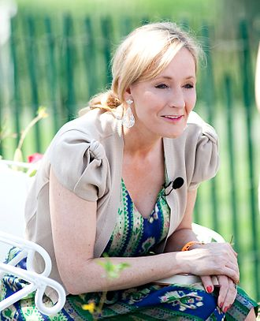

My hobby is to read interesting and science fiction books, especially the Harry Potter series. My favorite character is Harry Potter. He has a scar given by Lord Voldemort(tortures/kills Muggle-born wizards(muggles are human who don't do magic.) who murdered Harry's parents due to a prophecy that said that the Dark Lord will die as the seventh month dies and Voldemort will mark him as his equal and Harry realizes that he has the same powers as Voldemort, and a mysterious connection between Harry and Voldemort. I am on the fifth book, Harry Potter and the Order of the Phoenix. I have watched and read five (Harry Potter and the Sorcerer's Stone, Harry Potter and the Chamber of secrets, Harry Potter and the Prisoner of Askaban, Harry Potter and the Goblet of Fire, and Harry Potter and the Order of the Phoenix) out of 7 movies of the series. My favorite House of the four Houses of is Gryffindor because Harry Potter himself is in Gryffindor.
Click on the pictures to view my Inspiration.
